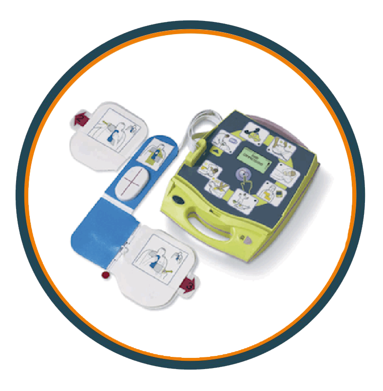

SERVICIOS
Dotación de DEA - DESFRIBILADORES EXTERNOS AUTOMATICOS

Facilitar a las empresas el acceso de los DEA, mediante convenios, adquisición y entrenar al personal en su uso mediante ejercicios prácticos.
Mas Información Aqui
Puestos de Primeros Auxilios para Eventos

Establecer una rápida atención de victimas por enfermedades repentinas o lesiones en lugares establecidos para eventos, con personal profesional en salud.
Mas Información Aqui
Elaboración y Ejecución de Planes de Contingencia ante Emergencias

Un plan de contingencia es un conjunto de procedimientos alternativos a la operatividad normal de cada institución. Su finalidad es la de permitir el funcionamiento de esta, aun cuando alguna de sus funciones deje de hacerlo por culpa de algún incidente tanto interno como ajeno a la organización.
Mas Información AquiCURSOS
Soporte Vital Avanzado de Vida

Reconocimiento y manejo inicial de emergencias cardio respiratorias. Procedimientos y maniobras básicas y avezadas de RCP. Manejo Básico inicial de la vía aérea invasivo y no invasivo. Uso de desfibriladores en niños y adultos. de urgencias. Capacitar al participante sobre el reconocimiento y manejo básico y avanzado de emergencias potencialmente fatales orientándolo sobre cómo responder a ellas aplicando maniobras básicas y avanzadas de reanimación cardiopulmonar.
Mas Información Aqui
Asistente de Primeros Auxilios Avanzado

Los primeros auxilios son el primer paso vital para una intervención eficaz y rápida que ayude a mitigar las lesiones graves y mejorar las posibilidades de supervivencia. La actuación inmediata y la administración correcta y adecuada de los PA son determinantes para salvar vidas. La formación en de calidad y basada en la experiencia permitirá edificar comunidades más seguras y sanas, ya que será posible prevenir y reducir los riesgos en casos de desastre y emergencias cotidianas.
Mas Información Aqui
Soporte Vital Basico de Vida

Brindar formación académica integral para los prestadores de servicios de salud tanto Intrahospitalaria como Prehospitalaria de Urgencias, e instruir a los participantes a salvar vidas de victimas en paro cardiaco por medio de una Reanimación cardiopulmonar (RCP) de alta calidad, para que el personal que brinde la atención, se desempeñe en situaciones de salvamento, reanimación, atención inicial, estabilizacion en el sitio del evento.
Mas Información Aqui
Conformación Entrenamiento y Re-Entrenamiento de Brigadas de Emergencia

Entre los principales objetivos, están el establecer y llevar a cabo medidas para evitar o disminuir el impacto dañino y destructivo de una emergencia, siniestro o desastre, con base en un análisis de los riesgos internos y externos a que está expuesta cualquier empresa.
Mas Información Aqui
Conformación Entrenamiento y Re-Entrenamiento de Brigadas de Emergencia

En el desarrollo de este curso se capacitará de forma idónea al participante con responsabilidad legal y ética de su labor en el manejo de pacientes que necesiten movilización hospitalaria, de igual forma desarrollara las técnicas competentes para el traslado de insumos médicos, muestras y otros. Basándose en las herramientas metodológicas necesarias y los procedimientos asistenciales logísticos y administrativos. Aprendiendo la utilización del lenguaje técnico específico inherentes a la función del camillero dentro del ambiente hospitalario.
Mas Información Aqui
Conductor de Vehiculos de Emergencia

Brindar formación académica integral para los prestadores de SAMU Servicio de Atención Medica de Urgencias, en Enfermedades Generales o Trauma, para que el personal que brinde la atención, se desempeñe en situaciones de salvamento, reanimación, atención inicial, estabilizacion en el sitio del evento, y asegure un traslado adecuado a la víctima al centro asistencial de urgencias.
Mas Información Aqui
Inyectología y Administración de Medicamentos

El curso se capacitará al personal del área de la salud o personas interesadas en los adecuados procedimientos para la aplicación de medicamentos por vía hipodérmica, intradérmica e intramuscular de forma idónea con responsabilidad y ética, también en la utilización adecuada de sueros, cumpliendo con las normas de bioseguridad y normatividad vigente. Aprendiendo las habilidades y procedimientos básicos requeridos para ejercer dicha labor y haciendo uso de las mejores técnicas y prácticas de manera segura y responsable.
Mas Información Aqui
Soporte Vital de Trauma Prehospitalario

Este entrenamiento promueve en los participantes la asimilación de los conceptos claves de atención del paciente de trauma y el desarrollo de pensamiento crítico como habilidad para la toma de decisiones razonadas en la correcta atención de los pacientes a su cargo.
Mas Información Aqui
Reanimación Neonatal

Este curso está diseñado para reforzar y mejorar las habilidades de los participantes en el tratamiento de emergencias y paro cardiorrespiratorio a través de la participación activa en una serie de casos pediátricos simulados.
Mas Información Aqui
Rescate y Salvamento en Aguas

Seleccionar los recursos necesarios para la operación de rescate de acuerdo con las características de la situación que se presente y el procedimiento a seguir, Implementar el mecanismo de búsqueda, rescate y salvamento según el procedimiento establecido.
Mas Información Aqui
Rescate con Cuerdas

Establecer las actividades para dar respuesta a una emergencia en alturas, de manera tal que se asegure el rescate en forma organizada y segura de un funcionario, contratista o subcontratistas que quede suspendido o atrapado, a una altura de 1.5m (Hacia abajo o hacia arriba), garantizado el acceso, estabilización, descenso y traslado al centro de atención.
Mas Información Aqui
Trabajo y Rescate en Espacios Confinados

Capacitar a todos aquellos que de una u otra manera tienen que ver con trabajos en Espacios Confinados. Además reconocer que la posibilidad de peligro en espacios confinados puede representar la diferencia entre la vida y la muerte. Aprender que el entrenamiento en procedimientos y uso de los equipos apropiados garantiza una entrada segura en espacios confinados.
Mas Información Aqui
Rescate Vehicular

Proporcionar a los participantes los conocimientos y habilidades necesarias para rescatar, estabilizar y extraer las víctimas atrapadas en vehículos, utilizando los procedimientos adecuados y seguros para el personal de Rescate y Víctimas.
Mas Información Aqui
Sistema Comando de Incidentes

El SCI como sistema de gestión permite el manejo efectivo y eficiente de incidentes integrando una combinación de instalaciones, equipo, personal, procedimientos y comunicaciones que operan dentro de una estructura organizacional común, diseñada para habilitar el manejo efectivo y eficiente de los incidentes. Una premisa básica del SCI es su aplicación amplia.
Mas Información Aqui
Toma de Muestras de Laboratorio Clinico

La toma de muestras de laboratorios tiene como objetivo fundamental garantizar la calidad en las fases de preparación, toma y resultados de cualquier tipo de muestra y permitir establecer el tipo de tratamiento requerido en un servicio o institución.
Mas Información Aqui
Atención a Victimas de Violencia Sexual y Genero

Identificar los pasos para el abordaje integral a las víctimas de violencia sexual partiendo de la apropiación del conocimiento sobre las políticas, normativas y tipologías de las violencias, en el marco de los derechos humanos, específicamente de los derechos sexuales y reproductivos con enfoques de derechos, género y diferencial.
Mas Información Aqui